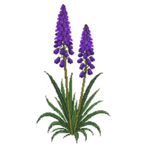

Scaly Blazing Star
Liatris squarrosa

Scaly Blazing Star is a perennial for edging, mid-border, suited to full sun to partial shade and loam or sandy soil, flowering Jun, Jul, Aug, Sep.
| Type | Perennial |
|---|---|
| Mature height | 60 cm |
| Spread | 30 cm |
| Aspect | full sun to partial shade |
| Foliage | Deciduous |
| Hardiness | USDA 4a-9b, RHS H7 |
| Pollinator-friendly | Yes |
| Pet-safe | Yes |
Where to use it in a border
At around 60 cm, it sits best along the front edge, where a low, spreading habit reads best. Give it about 30 cm of room to spread, roughly 3 to the metre when planted in a drift. It is hardy across USDA zones 4a to 9b and rated H7 by the RHS, so check it suits your area before planting.
It appears in our lists of full sun, sandy soil, pollinator-friendly plants, pet-safe plants.
Flowering through the year
Worth knowing
- Its flowers are valued by bees and other pollinators.
Good companions
Plants that share its conditions and style, chosen to complement its place in the border:
- Little Bluestemfor height behind it
- Little Bluestem 'Standing Ovation'to flower when it does not
- Little Bluestem 'The Blues'to flower when it does not
- Big Muhlyfor height behind it
- Prairie Dropseedto edge in front
- Hummingbird Mint 'Blue Boa'to flower when it does not
Garden styles
Meadow Modern Xeriscape (low-water)
See Scaly Blazing Star set in a full border, with spacing and companions worked out for your own conditions, in Border Builder.
Sources
Bloom timing and hardiness drawn from:
- UMN Extension (extension.umn.edu, 2026-05)
- USDA PLANTS (plants.usda.gov, 2026-05)
- Lady Bird Johnson Wildflower Center (wildflower.org, 2026-05)
- NC State Extension (plants.ces.ncsu.edu, 2026-05)